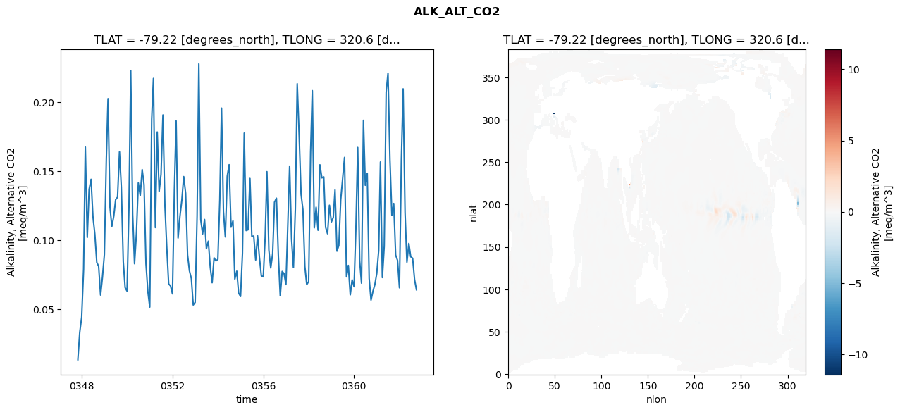
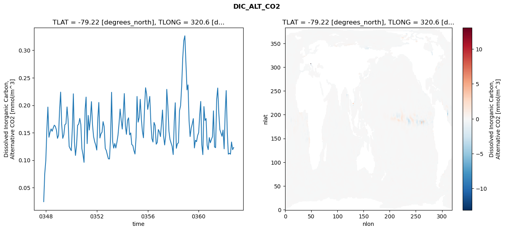
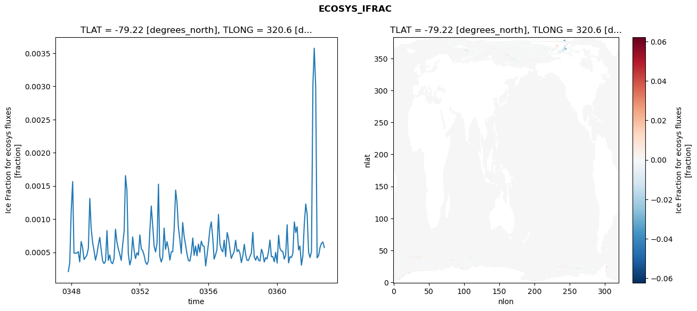
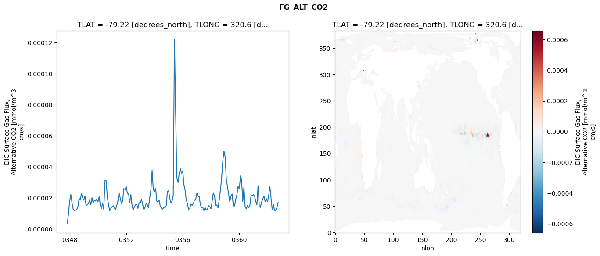

glb-dor_North_Atlantic_basin_044_1999-10-01_00179#
Simulation details#
Case: smyle.cdr-atlas-v0.glb-dor_North_Atlantic_basin_044_1999-10-01_00179.001
Basin: North_Atlantic_basin
Polygon: 44.0
Start date: 1999-10
Show code cell source Hide code cell source
import xarray as xr
import matplotlib.pyplot as plt
Show code cell source Hide code cell source
zarr_store = "/path/to/zarr/store"
# Parameters
zarr_store = "/global/cfs/projectdirs/m4746/Projects/Ocean-CDR-Atlas-v0/data/validation/smyle.cdr-atlas-v0.glb-dor_North_Atlantic_basin_044_1999-10-01_00179.001.validation.zarr"
Show code cell source Hide code cell source
%%time
ds_o = xr.open_zarr(zarr_store).compute()
ds_o
CPU times: user 611 ms, sys: 435 ms, total: 1.05 s
Wall time: 1.22 s
<xarray.Dataset> Size: 2MB
Dimensions: (nlat: 384, nlon: 320, time: 180)
Coordinates:
TLAT float64 8B -79.22
TLONG float64 8B 320.6
ULAT float64 8B -78.95
ULONG float64 8B 321.1
* time (time) object 1kB 0347-11-01 00:00:00 ... 0362-10-01 0...
z_t float32 4B 500.0
Dimensions without coordinates: nlat, nlon
Data variables:
ALK_ALT_CO2_diff (nlat, nlon) float32 492kB nan nan nan ... nan nan nan
ALK_ALT_CO2_rmse (time) float64 1kB 0.01354 0.03337 ... 0.0716 0.06418
DIC_ALT_CO2_diff (nlat, nlon) float32 492kB nan nan nan ... nan nan nan
DIC_ALT_CO2_rmse (time) float64 1kB 0.02454 0.07564 ... 0.1191 0.1231
ECOSYS_IFRAC_diff (nlat, nlon) float32 492kB nan nan nan ... nan nan nan
ECOSYS_IFRAC_rmse (time) float64 1kB 0.0002104 0.0003392 ... 0.0005716
FG_ALT_CO2_diff (nlat, nlon) float32 492kB nan nan nan ... nan nan nan
FG_ALT_CO2_rmse (time) float64 1kB 3.539e-06 9.712e-06 ... 1.696e-05xarray.Dataset
- nlat: 384
- nlon: 320
- time: 180
- TLAT()float64-79.22
- long_name :
- array of t-grid latitudes
- units :
- degrees_north
array(-79.22052261)
- TLONG()float64320.6
- long_name :
- array of t-grid longitudes
- units :
- degrees_east
array(320.56250892)
- ULAT()float64-78.95
- long_name :
- array of u-grid latitudes
- units :
- degrees_north
array(-78.95289509)
- ULONG()float64321.1
- long_name :
- array of u-grid longitudes
- units :
- degrees_east
array(321.12500894)
- time(time)object0347-11-01 00:00:00 ... 0362-10-...
- bounds :
- time_bound
- long_name :
- time
array([cftime.DatetimeNoLeap(347, 11, 1, 0, 0, 0, 0, has_year_zero=True), cftime.DatetimeNoLeap(347, 12, 1, 0, 0, 0, 0, has_year_zero=True), cftime.DatetimeNoLeap(348, 1, 1, 0, 0, 0, 0, has_year_zero=True), cftime.DatetimeNoLeap(348, 2, 1, 0, 0, 0, 0, has_year_zero=True), cftime.DatetimeNoLeap(348, 3, 1, 0, 0, 0, 0, has_year_zero=True), cftime.DatetimeNoLeap(348, 4, 1, 0, 0, 0, 0, has_year_zero=True), cftime.DatetimeNoLeap(348, 5, 1, 0, 0, 0, 0, has_year_zero=True), cftime.DatetimeNoLeap(348, 6, 1, 0, 0, 0, 0, has_year_zero=True), cftime.DatetimeNoLeap(348, 7, 1, 0, 0, 0, 0, has_year_zero=True), cftime.DatetimeNoLeap(348, 8, 1, 0, 0, 0, 0, has_year_zero=True), cftime.DatetimeNoLeap(348, 9, 1, 0, 0, 0, 0, has_year_zero=True), cftime.DatetimeNoLeap(348, 10, 1, 0, 0, 0, 0, has_year_zero=True), cftime.DatetimeNoLeap(348, 11, 1, 0, 0, 0, 0, has_year_zero=True), cftime.DatetimeNoLeap(348, 12, 1, 0, 0, 0, 0, has_year_zero=True), cftime.DatetimeNoLeap(349, 1, 1, 0, 0, 0, 0, has_year_zero=True), cftime.DatetimeNoLeap(349, 2, 1, 0, 0, 0, 0, has_year_zero=True), cftime.DatetimeNoLeap(349, 3, 1, 0, 0, 0, 0, has_year_zero=True), cftime.DatetimeNoLeap(349, 4, 1, 0, 0, 0, 0, has_year_zero=True), cftime.DatetimeNoLeap(349, 5, 1, 0, 0, 0, 0, has_year_zero=True), cftime.DatetimeNoLeap(349, 6, 1, 0, 0, 0, 0, has_year_zero=True), cftime.DatetimeNoLeap(349, 7, 1, 0, 0, 0, 0, has_year_zero=True), cftime.DatetimeNoLeap(349, 8, 1, 0, 0, 0, 0, has_year_zero=True), cftime.DatetimeNoLeap(349, 9, 1, 0, 0, 0, 0, has_year_zero=True), cftime.DatetimeNoLeap(349, 10, 1, 0, 0, 0, 0, has_year_zero=True), cftime.DatetimeNoLeap(349, 11, 1, 0, 0, 0, 0, has_year_zero=True), cftime.DatetimeNoLeap(349, 12, 1, 0, 0, 0, 0, has_year_zero=True), cftime.DatetimeNoLeap(350, 1, 1, 0, 0, 0, 0, has_year_zero=True), cftime.DatetimeNoLeap(350, 2, 1, 0, 0, 0, 0, has_year_zero=True), cftime.DatetimeNoLeap(350, 3, 1, 0, 0, 0, 0, has_year_zero=True), cftime.DatetimeNoLeap(350, 4, 1, 0, 0, 0, 0, has_year_zero=True), cftime.DatetimeNoLeap(350, 5, 1, 0, 0, 0, 0, has_year_zero=True), cftime.DatetimeNoLeap(350, 6, 1, 0, 0, 0, 0, has_year_zero=True), cftime.DatetimeNoLeap(350, 7, 1, 0, 0, 0, 0, has_year_zero=True), cftime.DatetimeNoLeap(350, 8, 1, 0, 0, 0, 0, has_year_zero=True), cftime.DatetimeNoLeap(350, 9, 1, 0, 0, 0, 0, has_year_zero=True), cftime.DatetimeNoLeap(350, 10, 1, 0, 0, 0, 0, has_year_zero=True), cftime.DatetimeNoLeap(350, 11, 1, 0, 0, 0, 0, has_year_zero=True), cftime.DatetimeNoLeap(350, 12, 1, 0, 0, 0, 0, has_year_zero=True), cftime.DatetimeNoLeap(351, 1, 1, 0, 0, 0, 0, has_year_zero=True), cftime.DatetimeNoLeap(351, 2, 1, 0, 0, 0, 0, has_year_zero=True), cftime.DatetimeNoLeap(351, 3, 1, 0, 0, 0, 0, has_year_zero=True), cftime.DatetimeNoLeap(351, 4, 1, 0, 0, 0, 0, has_year_zero=True), cftime.DatetimeNoLeap(351, 5, 1, 0, 0, 0, 0, has_year_zero=True), cftime.DatetimeNoLeap(351, 6, 1, 0, 0, 0, 0, has_year_zero=True), cftime.DatetimeNoLeap(351, 7, 1, 0, 0, 0, 0, has_year_zero=True), cftime.DatetimeNoLeap(351, 8, 1, 0, 0, 0, 0, has_year_zero=True), cftime.DatetimeNoLeap(351, 9, 1, 0, 0, 0, 0, has_year_zero=True), cftime.DatetimeNoLeap(351, 10, 1, 0, 0, 0, 0, has_year_zero=True), cftime.DatetimeNoLeap(351, 11, 1, 0, 0, 0, 0, has_year_zero=True), cftime.DatetimeNoLeap(351, 12, 1, 0, 0, 0, 0, has_year_zero=True), cftime.DatetimeNoLeap(352, 1, 1, 0, 0, 0, 0, has_year_zero=True), cftime.DatetimeNoLeap(352, 2, 1, 0, 0, 0, 0, has_year_zero=True), cftime.DatetimeNoLeap(352, 3, 1, 0, 0, 0, 0, has_year_zero=True), cftime.DatetimeNoLeap(352, 4, 1, 0, 0, 0, 0, has_year_zero=True), cftime.DatetimeNoLeap(352, 5, 1, 0, 0, 0, 0, has_year_zero=True), cftime.DatetimeNoLeap(352, 6, 1, 0, 0, 0, 0, has_year_zero=True), cftime.DatetimeNoLeap(352, 7, 1, 0, 0, 0, 0, has_year_zero=True), cftime.DatetimeNoLeap(352, 8, 1, 0, 0, 0, 0, has_year_zero=True), cftime.DatetimeNoLeap(352, 9, 1, 0, 0, 0, 0, has_year_zero=True), cftime.DatetimeNoLeap(352, 10, 1, 0, 0, 0, 0, has_year_zero=True), cftime.DatetimeNoLeap(352, 11, 1, 0, 0, 0, 0, has_year_zero=True), cftime.DatetimeNoLeap(352, 12, 1, 0, 0, 0, 0, has_year_zero=True), cftime.DatetimeNoLeap(353, 1, 1, 0, 0, 0, 0, has_year_zero=True), cftime.DatetimeNoLeap(353, 2, 1, 0, 0, 0, 0, has_year_zero=True), cftime.DatetimeNoLeap(353, 3, 1, 0, 0, 0, 0, has_year_zero=True), cftime.DatetimeNoLeap(353, 4, 1, 0, 0, 0, 0, has_year_zero=True), cftime.DatetimeNoLeap(353, 5, 1, 0, 0, 0, 0, has_year_zero=True), cftime.DatetimeNoLeap(353, 6, 1, 0, 0, 0, 0, has_year_zero=True), cftime.DatetimeNoLeap(353, 7, 1, 0, 0, 0, 0, has_year_zero=True), cftime.DatetimeNoLeap(353, 8, 1, 0, 0, 0, 0, has_year_zero=True), cftime.DatetimeNoLeap(353, 9, 1, 0, 0, 0, 0, has_year_zero=True), cftime.DatetimeNoLeap(353, 10, 1, 0, 0, 0, 0, has_year_zero=True), cftime.DatetimeNoLeap(353, 11, 1, 0, 0, 0, 0, has_year_zero=True), cftime.DatetimeNoLeap(353, 12, 1, 0, 0, 0, 0, has_year_zero=True), cftime.DatetimeNoLeap(354, 1, 1, 0, 0, 0, 0, has_year_zero=True), cftime.DatetimeNoLeap(354, 2, 1, 0, 0, 0, 0, has_year_zero=True), cftime.DatetimeNoLeap(354, 3, 1, 0, 0, 0, 0, has_year_zero=True), cftime.DatetimeNoLeap(354, 4, 1, 0, 0, 0, 0, has_year_zero=True), cftime.DatetimeNoLeap(354, 5, 1, 0, 0, 0, 0, has_year_zero=True), cftime.DatetimeNoLeap(354, 6, 1, 0, 0, 0, 0, has_year_zero=True), cftime.DatetimeNoLeap(354, 7, 1, 0, 0, 0, 0, has_year_zero=True), cftime.DatetimeNoLeap(354, 8, 1, 0, 0, 0, 0, has_year_zero=True), cftime.DatetimeNoLeap(354, 9, 1, 0, 0, 0, 0, has_year_zero=True), cftime.DatetimeNoLeap(354, 10, 1, 0, 0, 0, 0, has_year_zero=True), cftime.DatetimeNoLeap(354, 11, 1, 0, 0, 0, 0, has_year_zero=True), cftime.DatetimeNoLeap(354, 12, 1, 0, 0, 0, 0, has_year_zero=True), cftime.DatetimeNoLeap(355, 1, 1, 0, 0, 0, 0, has_year_zero=True), cftime.DatetimeNoLeap(355, 2, 1, 0, 0, 0, 0, has_year_zero=True), cftime.DatetimeNoLeap(355, 3, 1, 0, 0, 0, 0, has_year_zero=True), cftime.DatetimeNoLeap(355, 4, 1, 0, 0, 0, 0, has_year_zero=True), cftime.DatetimeNoLeap(355, 5, 1, 0, 0, 0, 0, has_year_zero=True), cftime.DatetimeNoLeap(355, 6, 1, 0, 0, 0, 0, has_year_zero=True), cftime.DatetimeNoLeap(355, 7, 1, 0, 0, 0, 0, has_year_zero=True), cftime.DatetimeNoLeap(355, 8, 1, 0, 0, 0, 0, has_year_zero=True), cftime.DatetimeNoLeap(355, 9, 1, 0, 0, 0, 0, has_year_zero=True), cftime.DatetimeNoLeap(355, 10, 1, 0, 0, 0, 0, has_year_zero=True), cftime.DatetimeNoLeap(355, 11, 1, 0, 0, 0, 0, has_year_zero=True), cftime.DatetimeNoLeap(355, 12, 1, 0, 0, 0, 0, has_year_zero=True), cftime.DatetimeNoLeap(356, 1, 1, 0, 0, 0, 0, has_year_zero=True), cftime.DatetimeNoLeap(356, 2, 1, 0, 0, 0, 0, has_year_zero=True), cftime.DatetimeNoLeap(356, 3, 1, 0, 0, 0, 0, has_year_zero=True), cftime.DatetimeNoLeap(356, 4, 1, 0, 0, 0, 0, has_year_zero=True), cftime.DatetimeNoLeap(356, 5, 1, 0, 0, 0, 0, has_year_zero=True), cftime.DatetimeNoLeap(356, 6, 1, 0, 0, 0, 0, has_year_zero=True), cftime.DatetimeNoLeap(356, 7, 1, 0, 0, 0, 0, has_year_zero=True), cftime.DatetimeNoLeap(356, 8, 1, 0, 0, 0, 0, has_year_zero=True), cftime.DatetimeNoLeap(356, 9, 1, 0, 0, 0, 0, has_year_zero=True), cftime.DatetimeNoLeap(356, 10, 1, 0, 0, 0, 0, has_year_zero=True), cftime.DatetimeNoLeap(356, 11, 1, 0, 0, 0, 0, has_year_zero=True), cftime.DatetimeNoLeap(356, 12, 1, 0, 0, 0, 0, has_year_zero=True), cftime.DatetimeNoLeap(357, 1, 1, 0, 0, 0, 0, has_year_zero=True), cftime.DatetimeNoLeap(357, 2, 1, 0, 0, 0, 0, has_year_zero=True), cftime.DatetimeNoLeap(357, 3, 1, 0, 0, 0, 0, has_year_zero=True), cftime.DatetimeNoLeap(357, 4, 1, 0, 0, 0, 0, has_year_zero=True), cftime.DatetimeNoLeap(357, 5, 1, 0, 0, 0, 0, has_year_zero=True), cftime.DatetimeNoLeap(357, 6, 1, 0, 0, 0, 0, has_year_zero=True), cftime.DatetimeNoLeap(357, 7, 1, 0, 0, 0, 0, has_year_zero=True), cftime.DatetimeNoLeap(357, 8, 1, 0, 0, 0, 0, has_year_zero=True), cftime.DatetimeNoLeap(357, 9, 1, 0, 0, 0, 0, has_year_zero=True), cftime.DatetimeNoLeap(357, 10, 1, 0, 0, 0, 0, has_year_zero=True), cftime.DatetimeNoLeap(357, 11, 1, 0, 0, 0, 0, has_year_zero=True), cftime.DatetimeNoLeap(357, 12, 1, 0, 0, 0, 0, has_year_zero=True), cftime.DatetimeNoLeap(358, 1, 1, 0, 0, 0, 0, has_year_zero=True), cftime.DatetimeNoLeap(358, 2, 1, 0, 0, 0, 0, has_year_zero=True), cftime.DatetimeNoLeap(358, 3, 1, 0, 0, 0, 0, has_year_zero=True), cftime.DatetimeNoLeap(358, 4, 1, 0, 0, 0, 0, has_year_zero=True), cftime.DatetimeNoLeap(358, 5, 1, 0, 0, 0, 0, has_year_zero=True), cftime.DatetimeNoLeap(358, 6, 1, 0, 0, 0, 0, has_year_zero=True), cftime.DatetimeNoLeap(358, 7, 1, 0, 0, 0, 0, has_year_zero=True), cftime.DatetimeNoLeap(358, 8, 1, 0, 0, 0, 0, has_year_zero=True), cftime.DatetimeNoLeap(358, 9, 1, 0, 0, 0, 0, has_year_zero=True), cftime.DatetimeNoLeap(358, 10, 1, 0, 0, 0, 0, has_year_zero=True), cftime.DatetimeNoLeap(358, 11, 1, 0, 0, 0, 0, has_year_zero=True), cftime.DatetimeNoLeap(358, 12, 1, 0, 0, 0, 0, has_year_zero=True), cftime.DatetimeNoLeap(359, 1, 1, 0, 0, 0, 0, has_year_zero=True), cftime.DatetimeNoLeap(359, 2, 1, 0, 0, 0, 0, has_year_zero=True), cftime.DatetimeNoLeap(359, 3, 1, 0, 0, 0, 0, has_year_zero=True), cftime.DatetimeNoLeap(359, 4, 1, 0, 0, 0, 0, has_year_zero=True), cftime.DatetimeNoLeap(359, 5, 1, 0, 0, 0, 0, has_year_zero=True), cftime.DatetimeNoLeap(359, 6, 1, 0, 0, 0, 0, has_year_zero=True), cftime.DatetimeNoLeap(359, 7, 1, 0, 0, 0, 0, has_year_zero=True), cftime.DatetimeNoLeap(359, 8, 1, 0, 0, 0, 0, has_year_zero=True), cftime.DatetimeNoLeap(359, 9, 1, 0, 0, 0, 0, has_year_zero=True), cftime.DatetimeNoLeap(359, 10, 1, 0, 0, 0, 0, has_year_zero=True), cftime.DatetimeNoLeap(359, 11, 1, 0, 0, 0, 0, has_year_zero=True), cftime.DatetimeNoLeap(359, 12, 1, 0, 0, 0, 0, has_year_zero=True), cftime.DatetimeNoLeap(360, 1, 1, 0, 0, 0, 0, has_year_zero=True), cftime.DatetimeNoLeap(360, 2, 1, 0, 0, 0, 0, has_year_zero=True), cftime.DatetimeNoLeap(360, 3, 1, 0, 0, 0, 0, has_year_zero=True), cftime.DatetimeNoLeap(360, 4, 1, 0, 0, 0, 0, has_year_zero=True), cftime.DatetimeNoLeap(360, 5, 1, 0, 0, 0, 0, has_year_zero=True), cftime.DatetimeNoLeap(360, 6, 1, 0, 0, 0, 0, has_year_zero=True), cftime.DatetimeNoLeap(360, 7, 1, 0, 0, 0, 0, has_year_zero=True), cftime.DatetimeNoLeap(360, 8, 1, 0, 0, 0, 0, has_year_zero=True), cftime.DatetimeNoLeap(360, 9, 1, 0, 0, 0, 0, has_year_zero=True), cftime.DatetimeNoLeap(360, 10, 1, 0, 0, 0, 0, has_year_zero=True), cftime.DatetimeNoLeap(360, 11, 1, 0, 0, 0, 0, has_year_zero=True), cftime.DatetimeNoLeap(360, 12, 1, 0, 0, 0, 0, has_year_zero=True), cftime.DatetimeNoLeap(361, 1, 1, 0, 0, 0, 0, has_year_zero=True), cftime.DatetimeNoLeap(361, 2, 1, 0, 0, 0, 0, has_year_zero=True), cftime.DatetimeNoLeap(361, 3, 1, 0, 0, 0, 0, has_year_zero=True), cftime.DatetimeNoLeap(361, 4, 1, 0, 0, 0, 0, has_year_zero=True), cftime.DatetimeNoLeap(361, 5, 1, 0, 0, 0, 0, has_year_zero=True), cftime.DatetimeNoLeap(361, 6, 1, 0, 0, 0, 0, has_year_zero=True), cftime.DatetimeNoLeap(361, 7, 1, 0, 0, 0, 0, has_year_zero=True), cftime.DatetimeNoLeap(361, 8, 1, 0, 0, 0, 0, has_year_zero=True), cftime.DatetimeNoLeap(361, 9, 1, 0, 0, 0, 0, has_year_zero=True), cftime.DatetimeNoLeap(361, 10, 1, 0, 0, 0, 0, has_year_zero=True), cftime.DatetimeNoLeap(361, 11, 1, 0, 0, 0, 0, has_year_zero=True), cftime.DatetimeNoLeap(361, 12, 1, 0, 0, 0, 0, has_year_zero=True), cftime.DatetimeNoLeap(362, 1, 1, 0, 0, 0, 0, has_year_zero=True), cftime.DatetimeNoLeap(362, 2, 1, 0, 0, 0, 0, has_year_zero=True), cftime.DatetimeNoLeap(362, 3, 1, 0, 0, 0, 0, has_year_zero=True), cftime.DatetimeNoLeap(362, 4, 1, 0, 0, 0, 0, has_year_zero=True), cftime.DatetimeNoLeap(362, 5, 1, 0, 0, 0, 0, has_year_zero=True), cftime.DatetimeNoLeap(362, 6, 1, 0, 0, 0, 0, has_year_zero=True), cftime.DatetimeNoLeap(362, 7, 1, 0, 0, 0, 0, has_year_zero=True), cftime.DatetimeNoLeap(362, 8, 1, 0, 0, 0, 0, has_year_zero=True), cftime.DatetimeNoLeap(362, 9, 1, 0, 0, 0, 0, has_year_zero=True), cftime.DatetimeNoLeap(362, 10, 1, 0, 0, 0, 0, has_year_zero=True)], dtype=object) - z_t()float32500.0
- long_name :
- depth from surface to midpoint of layer
- positive :
- down
- units :
- centimeters
- valid_max :
- 537500.0
- valid_min :
- 500.0
array(500., dtype=float32)
- ALK_ALT_CO2_diff(nlat, nlon)float32nan nan nan nan ... nan nan nan nan
- cell_methods :
- time: mean
- grid_loc :
- 3111
- long_name :
- Alkalinity, Alternative CO2
- units :
- meq/m^3
array([[ nan, nan, nan, ..., nan, nan, nan], [ nan, nan, nan, ..., nan, nan, nan], [ 0.00952148, -0.00488281, 0.00439453, ..., nan, nan, nan], ..., [ nan, nan, nan, ..., nan, nan, nan], [ nan, nan, nan, ..., nan, nan, nan], [ nan, nan, nan, ..., nan, nan, nan]], dtype=float32) - ALK_ALT_CO2_rmse(time)float640.01354 0.03337 ... 0.0716 0.06418
- cell_methods :
- time: mean
- grid_loc :
- 3111
- long_name :
- Alkalinity, Alternative CO2
- units :
- meq/m^3
array([0.01354078, 0.03336707, 0.04423205, 0.07910855, 0.16750033, 0.10210121, 0.13693329, 0.1441531 , 0.11735662, 0.10445893, 0.08401344, 0.08120315, 0.06034464, 0.07316098, 0.08957964, 0.15825324, 0.20254625, 0.12405839, 0.11007685, 0.11737721, 0.12936762, 0.13124413, 0.1640594 , 0.13843888, 0.08449478, 0.06571576, 0.06321693, 0.12570327, 0.22291452, 0.1188412 , 0.08303799, 0.10555965, 0.14154851, 0.13250008, 0.15120343, 0.14027589, 0.08292528, 0.06327969, 0.05163527, 0.18763198, 0.21720626, 0.10919877, 0.17842937, 0.13541237, 0.14777775, 0.19073517, 0.12592949, 0.09560376, 0.06841229, 0.06694273, 0.06120573, 0.13652114, 0.18645993, 0.10164523, 0.11723769, 0.12919654, 0.14612583, 0.1340236 , 0.08944085, 0.077885 , 0.07226475, 0.05315609, 0.0550534 , 0.11764863, 0.22773754, 0.11475347, 0.10463404, 0.11509787, 0.09390082, 0.09934986, 0.08046445, 0.06928899, 0.08731681, 0.08508738, 0.08616574, 0.12911929, 0.19571136, 0.12087898, 0.10243618, 0.14640528, 0.1547398 , 0.10950933, 0.11409782, 0.07191357, 0.07763168, 0.06183932, 0.05930991, 0.09067438, 0.17763559, 0.10706102, 0.10758066, 0.1447796 , 0.1028473 , 0.10306606, 0.08576082, 0.10330169, 0.08731531, 0.07432109, 0.07353215, 0.10249632, 0.14969355, 0.09294399, 0.07996489, 0.09033871, 0.12761066, 0.13047755, 0.08852355, 0.05980802, 0.0774584 , 0.07595514, 0.06792099, 0.11346812, 0.15374117, 0.10082444, 0.08024841, 0.12300186, 0.2133736 , 0.17621816, 0.13337593, 0.12217449, 0.08101013, 0.06790586, 0.0701782 , 0.16379066, 0.20837979, 0.1090102 , 0.12398783, 0.10725891, 0.15466477, 0.14519673, 0.14589879, 0.10941413, 0.10472181, 0.12538127, 0.1132584 , 0.11658928, 0.13649122, 0.0921214 , 0.09623291, 0.1294714 , 0.14425799, 0.16001147, 0.07349895, 0.08180553, 0.06049995, 0.07137703, 0.06636901, 0.11094701, 0.16720544, 0.08527465, 0.06895908, 0.18690038, 0.13983408, 0.14841772, 0.0722808 , 0.05668385, 0.06315278, 0.0678065 , 0.07591847, 0.09246974, 0.15670925, 0.07300652, 0.09563721, 0.20721671, 0.22103989, 0.15857543, 0.11802649, 0.12665153, 0.08928781, 0.08554218, 0.06560837, 0.15815327, 0.20966021, 0.11998801, 0.08415432, 0.09772801, 0.08809918, 0.08703164, 0.07159513, 0.06417712]) - DIC_ALT_CO2_diff(nlat, nlon)float32nan nan nan nan ... nan nan nan nan
- cell_methods :
- time: mean
- grid_loc :
- 3111
- long_name :
- Dissolved Inorganic Carbon, Alternative CO2
- units :
- mmol/m^3
array([[ nan, nan, nan, ..., nan, nan, nan], [ nan, nan, nan, ..., nan, nan, nan], [ 0.00024414, -0.00976562, -0.00585938, ..., nan, nan, nan], ..., [ nan, nan, nan, ..., nan, nan, nan], [ nan, nan, nan, ..., nan, nan, nan], [ nan, nan, nan, ..., nan, nan, nan]], dtype=float32) - DIC_ALT_CO2_rmse(time)float640.02454 0.07564 ... 0.1191 0.1231
- cell_methods :
- time: mean
- grid_loc :
- 3111
- long_name :
- Dissolved Inorganic Carbon, Alternative CO2
- units :
- mmol/m^3
array([0.02453963, 0.07563652, 0.09984397, 0.15829789, 0.196698 , 0.14180266, 0.15077461, 0.15700056, 0.15266432, 0.15865552, 0.16371759, 0.16155685, 0.15487273, 0.13974536, 0.14541808, 0.1936937 , 0.22391781, 0.16459918, 0.13977733, 0.14629478, 0.16454854, 0.1663721 , 0.19695045, 0.17342741, 0.12499631, 0.12096115, 0.11729618, 0.15961899, 0.22083736, 0.13316435, 0.10866332, 0.12744035, 0.16350753, 0.1656822 , 0.17608417, 0.16520545, 0.12075155, 0.11059334, 0.09611525, 0.19198609, 0.2148673 , 0.13015719, 0.18149155, 0.15487104, 0.17494778, 0.20659295, 0.16462582, 0.1432369 , 0.13373711, 0.12788421, 0.11849829, 0.17706662, 0.20506941, 0.14041245, 0.14806689, 0.15101812, 0.1701601 , 0.16095971, 0.12158689, 0.11768001, 0.10943567, 0.10247759, 0.10231662, 0.14250773, 0.22361226, 0.1342086 , 0.12192257, 0.13047306, 0.12223591, 0.13267269, 0.14534288, 0.1667029 , 0.19304075, 0.17335049, 0.15664749, 0.18517073, 0.22130122, 0.162673 , 0.14707963, 0.17253924, 0.17711553, 0.14611914, 0.1496299 , 0.12851776, 0.12673167, 0.11771607, 0.11125307, 0.14164882, 0.21599857, 0.16924063, 0.17735095, 0.2107605 , 0.17636276, 0.15304586, 0.14078123, 0.19456242, 0.23181647, 0.21979928, 0.19250494, 0.20417589, 0.21609818, 0.16799866, 0.1391869 , 0.13303549, 0.16873419, 0.16315506, 0.12912262, 0.13224981, 0.15575884, 0.15181668, 0.14295782, 0.16725605, 0.1913095 , 0.14414371, 0.12773087, 0.14548024, 0.22893098, 0.19843013, 0.15288503, 0.13799591, 0.13128212, 0.12531733, 0.11027963, 0.17096482, 0.20452781, 0.12165228, 0.12985932, 0.13172363, 0.19026783, 0.19929177, 0.23459561, 0.28544918, 0.31746463, 0.3263317 , 0.27689499, 0.22797522, 0.23707457, 0.17202967, 0.14300783, 0.15831662, 0.16602893, 0.17570824, 0.12228347, 0.13638671, 0.13366624, 0.14457813, 0.15026231, 0.18373336, 0.20696132, 0.12783238, 0.11013309, 0.19758975, 0.17232574, 0.1758466 , 0.12697281, 0.11928131, 0.14116503, 0.13170146, 0.13772584, 0.14299389, 0.1898002 , 0.12408928, 0.12282343, 0.2105963 , 0.23137145, 0.18597499, 0.15552504, 0.14972896, 0.1435019 , 0.1547771 , 0.1206564 , 0.18912942, 0.22671823, 0.15078914, 0.1109871 , 0.11266107, 0.11097878, 0.13314143, 0.11911165, 0.12309408]) - ECOSYS_IFRAC_diff(nlat, nlon)float32nan nan nan nan ... nan nan nan nan
- cell_methods :
- time: mean
- grid_loc :
- 2110
- long_name :
- Ice Fraction for ecosys fluxes
- units :
- fraction
array([[ nan, nan, nan, ..., nan, nan, nan], [ nan, nan, nan, ..., nan, nan, nan], [-1.1920929e-06, 4.7683716e-07, 7.1525574e-07, ..., nan, nan, nan], ..., [ nan, nan, nan, ..., nan, nan, nan], [ nan, nan, nan, ..., nan, nan, nan], [ nan, nan, nan, ..., nan, nan, nan]], dtype=float32) - ECOSYS_IFRAC_rmse(time)float640.0002104 0.0003392 ... 0.0005716
- cell_methods :
- time: mean
- grid_loc :
- 2110
- long_name :
- Ice Fraction for ecosys fluxes
- units :
- fraction
array([0.00021041, 0.00033922, 0.00112673, 0.00156546, 0.00048693, 0.00048545, 0.00048924, 0.00050894, 0.00035485, 0.00066162, 0.00056901, 0.00039127, 0.00042447, 0.00045683, 0.00056303, 0.00131062, 0.00086489, 0.00064925, 0.0005306 , 0.00038164, 0.00047088, 0.00061336, 0.00072466, 0.00053474, 0.00036864, 0.00033005, 0.00036641, 0.00082607, 0.00037689, 0.00046055, 0.00034619, 0.00032911, 0.00040554, 0.00084775, 0.00065165, 0.00054806, 0.00046703, 0.0003771 , 0.00061704, 0.00081749, 0.00165482, 0.00143412, 0.00047367, 0.00030919, 0.0003924 , 0.00073165, 0.00052633, 0.00040598, 0.00049289, 0.0004566 , 0.00076106, 0.00054993, 0.00052805, 0.00045702, 0.00035487, 0.00031595, 0.00036732, 0.00081571, 0.00119723, 0.00090493, 0.00058841, 0.00050565, 0.00063629, 0.00152605, 0.00044193, 0.00035343, 0.00042288, 0.00086546, 0.00054368, 0.00066147, 0.00055547, 0.00038268, 0.00050792, 0.00050888, 0.00086054, 0.00143754, 0.00126313, 0.00087211, 0.00069722, 0.00048149, 0.00094811, 0.00073974, 0.00060923, 0.00047174, 0.00037483, 0.00036917, 0.00049546, 0.00071533, 0.00045432, 0.00059345, 0.00044723, 0.00062292, 0.00050093, 0.00066736, 0.00059794, 0.00058948, 0.00029415, 0.00045479, 0.0006415 , 0.00085751, 0.00095868, 0.00072296, 0.00039665, 0.00046512, 0.00054863, 0.00107069, 0.00062213, 0.00054225, 0.000506 , 0.00068197, 0.00043522, 0.00079738, 0.00071827, 0.00055047, 0.00040701, 0.00046454, 0.0005114 , 0.0006814 , 0.00051161, 0.00053914, 0.00048456, 0.00034509, 0.00044783, 0.00062073, 0.0004696 , 0.00037906, 0.00037758, 0.00043811, 0.00048562, 0.00080032, 0.00042917, 0.00038081, 0.00044331, 0.00038143, 0.00036921, 0.00054576, 0.00048919, 0.00035396, 0.00041851, 0.00039985, 0.00051078, 0.00068388, 0.00043296, 0.0004361 , 0.0003567 , 0.00049858, 0.00033836, 0.00075716, 0.00055995, 0.0005185 , 0.00051396, 0.00039671, 0.00045912, 0.0009147 , 0.00034081, 0.00043282, 0.0004219 , 0.00048245, 0.000958 , 0.0007992 , 0.00088502, 0.00053494, 0.00059511, 0.00030606, 0.00044149, 0.00092131, 0.00122814, 0.00107115, 0.00049901, 0.00042086, 0.00050929, 0.00304046, 0.00357408, 0.00298248, 0.00041575, 0.00045022, 0.00056864, 0.00063449, 0.00065484, 0.00057159]) - FG_ALT_CO2_diff(nlat, nlon)float32nan nan nan nan ... nan nan nan nan
- cell_methods :
- time: mean
- grid_loc :
- 2110
- long_name :
- DIC Surface Gas Flux, Alternative CO2
- units :
- mmol/m^3 cm/s
array([[ nan, nan, nan, ..., nan, nan, nan], [ nan, nan, nan, ..., nan, nan, nan], [8.1270741e-09, 1.1127327e-08, 6.7000903e-09, ..., nan, nan, nan], ..., [ nan, nan, nan, ..., nan, nan, nan], [ nan, nan, nan, ..., nan, nan, nan], [ nan, nan, nan, ..., nan, nan, nan]], dtype=float32) - FG_ALT_CO2_rmse(time)float643.539e-06 9.712e-06 ... 1.696e-05
- cell_methods :
- time: mean
- grid_loc :
- 2110
- long_name :
- DIC Surface Gas Flux, Alternative CO2
- units :
- mmol/m^3 cm/s
array([3.53947842e-06, 9.71181958e-06, 1.80677153e-05, 2.21365484e-05, 1.70177758e-05, 1.27764303e-05, 1.19708834e-05, 1.20335822e-05, 1.24298735e-05, 1.39426318e-05, 1.97502205e-05, 1.85218175e-05, 2.28882510e-05, 2.01001364e-05, 1.85475816e-05, 2.13169526e-05, 1.48807048e-05, 1.56522254e-05, 1.62474245e-05, 1.89205210e-05, 1.55342935e-05, 2.00798637e-05, 1.69232217e-05, 1.84784715e-05, 1.79659569e-05, 1.91290517e-05, 1.74956836e-05, 2.07214798e-05, 1.58756997e-05, 1.30944740e-05, 1.67596019e-05, 1.26330501e-05, 3.10440954e-05, 3.12401199e-05, 2.05247616e-05, 1.58502451e-05, 1.16347740e-05, 1.32101368e-05, 1.42691515e-05, 1.49468145e-05, 1.33701396e-05, 1.23871400e-05, 1.50480381e-05, 1.80756447e-05, 2.33629815e-05, 1.96998194e-05, 1.64101893e-05, 1.80272420e-05, 2.59369435e-05, 2.53551012e-05, 2.72046070e-05, 2.28705159e-05, 2.31243221e-05, 1.69166792e-05, 2.21225573e-05, 1.51157092e-05, 1.20683446e-05, 1.43120954e-05, 1.55547597e-05, 1.57456960e-05, 1.32013000e-05, 1.68259411e-05, 1.69289520e-05, 1.89363621e-05, 1.59761891e-05, 1.23922930e-05, 1.38327462e-05, 1.64721979e-05, 1.55209212e-05, 1.38136247e-05, 2.02675027e-05, 2.51965996e-05, 3.77355949e-05, 2.54715385e-05, 2.40246366e-05, 2.61065393e-05, 1.79264444e-05, 1.73289956e-05, 1.86551464e-05, 1.44167442e-05, ... 2.50663417e-05, 1.91146426e-05, 1.62967745e-05, 1.26350574e-05, 1.31897584e-05, 1.59309186e-05, 1.52243934e-05, 1.62142571e-05, 1.87152992e-05, 1.88366214e-05, 2.30400198e-05, 2.06958960e-05, 2.08746066e-05, 1.57319690e-05, 1.35380625e-05, 1.39806636e-05, 1.18374025e-05, 1.38003682e-05, 1.21273877e-05, 1.26983402e-05, 1.51504703e-05, 1.43323363e-05, 1.30214185e-05, 1.81045646e-05, 2.33424686e-05, 2.13696291e-05, 1.49247791e-05, 1.55079245e-05, 1.36039960e-05, 1.86533653e-05, 2.50787568e-05, 3.23192392e-05, 4.36990582e-05, 5.01241023e-05, 4.64970591e-05, 3.17217659e-05, 2.73827959e-05, 2.22327021e-05, 1.75199285e-05, 2.12307506e-05, 2.25104215e-05, 1.48718252e-05, 1.47908268e-05, 1.90437738e-05, 2.21737023e-05, 2.73257698e-05, 2.57055449e-05, 3.40658990e-05, 3.18405033e-05, 1.77468126e-05, 2.69636225e-05, 1.42713818e-05, 1.28846379e-05, 1.51614428e-05, 1.38327644e-05, 1.50270875e-05, 2.13297608e-05, 2.15406170e-05, 2.20896294e-05, 2.11032136e-05, 1.79570137e-05, 1.55116795e-05, 2.78327602e-05, 1.44653348e-05, 1.38980120e-05, 1.74264917e-05, 1.93926482e-05, 2.10970249e-05, 1.74765508e-05, 1.94900289e-05, 1.74971986e-05, 2.17994966e-05, 2.75077288e-05, 1.97554073e-05, 1.23734855e-05, 1.58469986e-05, 1.16944739e-05, 1.22108468e-05, 1.38751892e-05, 1.69609186e-05])
- timePandasIndex
PandasIndex(CFTimeIndex([0347-11-01 00:00:00, 0347-12-01 00:00:00, 0348-01-01 00:00:00, 0348-02-01 00:00:00, 0348-03-01 00:00:00, 0348-04-01 00:00:00, 0348-05-01 00:00:00, 0348-06-01 00:00:00, 0348-07-01 00:00:00, 0348-08-01 00:00:00, ... 0362-01-01 00:00:00, 0362-02-01 00:00:00, 0362-03-01 00:00:00, 0362-04-01 00:00:00, 0362-05-01 00:00:00, 0362-06-01 00:00:00, 0362-07-01 00:00:00, 0362-08-01 00:00:00, 0362-09-01 00:00:00, 0362-10-01 00:00:00], dtype='object', length=180, calendar='noleap', freq='MS'))
Show code cell source Hide code cell source
variables = [v[:-5] for v in ds_o.variables if "_rmse" in v]
Show code cell source Hide code cell source
plt.rcParams.update({'figure.max_open_warning': 0})
for v in variables:
fig, axs = plt.subplots(1, 2, figsize=(15, 6))
ds_o[f"{v}_rmse"].plot(ax=axs[0])
ds_o[f"{v}_diff"].plot(ax=axs[1])
plt.suptitle(v, fontweight="bold")



